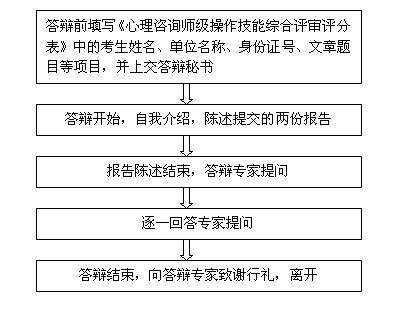

结合自己的成长经历，对自己的基本人格特征、情绪特征、压力（挫折）的应对方式、培训和从业动机等做简要介绍；
结合自己以上的分析，谈谈自己对心理咨询职业活动和心理咨询师职业行为、职业道德等方面的认识；
结合自己的成长经历，谈谈自己成长经历中的重要事件、重要体验是如何影响心理咨询师职业生涯的从业过程的？如何看待这些影响？如何应对和解决由此而带来的系列问题？
结合自身体验，谈谈自己对心理咨询师职业从业方向和前景的看法，同时谈谈自己在业务技能提高、理论水平提高方面的想法和努力方向？
为什么对求助者的心理和行为问题的发生和发展做这样的分析，理论依据和实践的依据是什么？
初步诊断、确定诊断的依据是什么？鉴别诊断的依据是什么？
为什么确立这样的咨询目标？短期目标和长期目标在咨询过程中是如何实现的？
咨询过程中为什么采用某个或某些疗法和技术？具体是如何使用的？
咨询过程中遭遇阻抗、沉默、求助者失约或迟到、脱落等问题时你是如何处理的？
回答案例报告提问的注意事项
诚实的回答，该案例是否是自己亲自处理的案例。如果不是，必须诚实的表明自己为什么选择这个案例进行答辩。（最好把这个案例和自己扯上关系。）
对你的人格特征、情绪特征、压力（挫折）的应对方式和个人成长经历中重要事件、重要体验对你从业的影响进行提问？
回答个人成长分析报告提问的注意事项
感谢专家！ 道别！
由3-5位综合评审委员会委员独立对文章内容进行评定，将评定结果填入综合评审评分表。
论文内容不符合撰写要求的考生，不得参加答辩。
论文内容部分的成绩实行百分制，由评审委员会中每位成员评定的成绩进行算术平均后得出。
考生该部分成绩必须符合以下两个条件，方可参加答辩：占评审委员会总数2/3以上的委员评分合格（≥60分）；平均分合格（≥60分）。
答辩部分评分标准
对自己不明白的提问，要谦虚而有礼貌地告诉提问老师，自己在这个问题上还没有太多的理解，以后会努力掌握这方面的知识，切忌不懂装懂